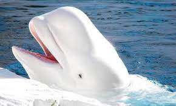

Avistamientos Recientes

Ballena Jorobada
Avistamiento en la costa de California, Estados Unidos.

Ballena Beluga
Avistamiento en la costa de Quebec, Canadá.

Ballena Azul
Avistamiento en el Océano Atlántico.